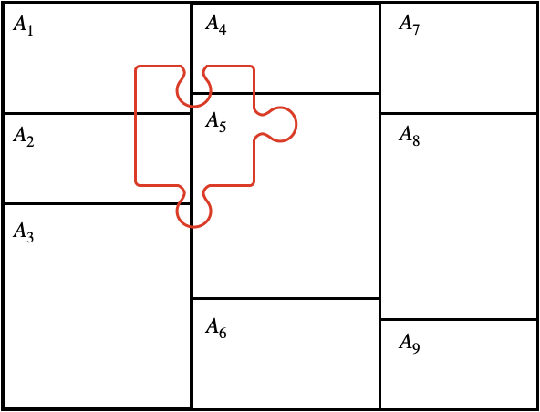
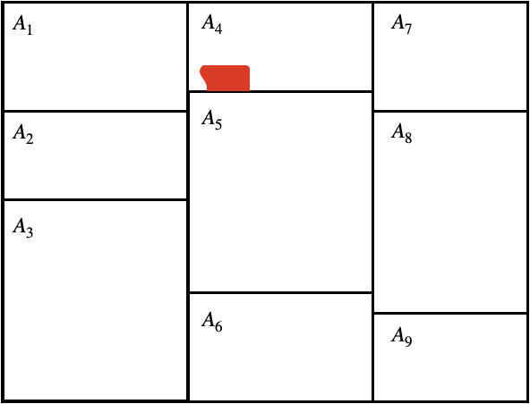

Week 1
Introduction to Probability
UC Berkeley, School of Information
The Nature of Statistical Models
What is a Model?

Image: www.flickr.com/photos/brickset/ (CC BY 2.0)
What is a Statistical Model?

Course Plan
- Putting together statistical models
- Fitting models to data
First Models

Image: Hans Schou (CC BY-SA 3.0)
Useful Models

Image: www.flickr.com/photos/brickset/ (CC BY 2.0)
Probability is Rules for Putting Pieces Together

Image: www.flickr.com/photos/billward/ (CC BY 2.0)
Unit Plan
Necessary Foundation
- A precise definition of probability
- How mathematicians build from a set of axioms to useful properties
- How to connect these properties to problems that we want to solve
Reading Assignment
Reading Assignment
Throughout this course, we intersperse reading, lectures, and work that you complete as a bundled async . This way, you can very quickly move from
An introduction to a concept
An explanation of its use
A proof of that concept
An application using data or problem solving
We have designed the course so that you can complete the async, reading, and lecture activity components over a few self-contained study sessions.
Reading Assignment (cont.)
Read the following sections:
- Introduction, page xv - xviii
Probability is Reasoning Under Uncertainty
Probablity is A System of Reasoning
"Essentially, the theory of probability is nothing but good common
sense reduced to mathematics. It provides an exact appreciation of
what sound minds feel with a kind of instinct, frequently without
being able to account for it.”
- Pierre-Simon Laplace
Probability is A Model of the World
Apocryphal quotations
``_All models are wrong; some are useful._'' \\\hspace{1em} —George BoxProbability is:
- A mathematical construct
- A model or abstraction of the world
Probability is a Model - Example 1

Probability is a Model - Example 2

Probability is a Model - Example 2 (cont.)

Probability is a Model - Example 3

An Axiomatic Approach
Why take an axiomatic approach?
- Define a minimal set of statements that are consistent with the world we observe
- Deduce statements that must then be logically entailed
Thomas Kuhn’s Philosophy of Science
- <1-> Axiomatic statements
- <1-> Intermediate theories
- <1-> Testable hypotheses
Learnosity: Set Theory Diagnostic Quiz
Set Theory
If you already understand the following notation and can solve the problem, we recommend that you skip this sequence and go straight to the next segment about partitions.
Notation:
\(A\) and \(B\) are sets.
Simplify the expression: \((A \cap B) \cup( B \setminus A)\)
The Set Operations, Part 1
Visualizing a Set

- A set contains objects.
- Items don’t have an order.
- Items can’t repeat.
Elements of Sets
Defining a new set:
Elements go in curly braces.
A colon means “such that”.
Specifying elements:
’ \(\in\) ’ means ’“is an element of.”
’ \(\notin\) ’ means “is not an element of.”
’ \(\emptyset\) ’ means the empty set.
Subsets and Supersets
Set Union
Properties of Unions
- Symmetry: \(A \cup B = B \cup A\)
- Association: \((A \cup B) \cup C = A \cup(B \cup C)\)
- \(A \cup A = A\)
- \(A \cup \emptyset = A\)
The Set Operations, Part 2
Set Intersection
Properties of Intersections
- Symmetry: \(A \cap B = B \cap A\)
- Association: \((A \cap B) \cap C = A \cap(B \cap C)\)
- \(A \cap A = A\)
- \(A \cap \emptyset = \emptyset\)
Distributing Union and Intersection
Set Difference
Distributing Set Difference
Set Complement
Set Partitions
Set Partitions
Definition 1.1.12: partition
A set of sets $A_{1}, A_{2}, \dots, A_{n}$ is a _partition_ of set $S$, if $A_{1}, A_{2}, \dots, A_{n}$ are nonempty and
pairwise disjoint, and if $S = A_{1} \cup A_{2} \cup \cdots \cup A_{n}$.Partition Rule 1
Given a set \(A\) and another set \(B\) , a partition of \(A\) is…
Partition Rule 2
Given a set \(A\) and another set \(B\) , a partition of \(A \cup B\) is…
Call to Reading
- Chapter 1, from page 3 to the top of page 8, stopping before Theorem 1.1.1
Probability Spaces
Fundamental Components of Probability Space
A Probability Space
- A sample space , denoted as \(\Omega\) , is the collection of all possible outcomes.
- An event space , denoted as \(S\) , is made up of sets of outcomes.
- A probability measure is a function that maps events to numbers in \([0,1]\) . % include squiggly picture
Sample Spaces
Choosing sample space \(\Omega\) to represent…
- A die % which is discrete
- A dartboard % which is continuous
- A survey of 5 U.S. senators
- A spoken conversation
Events
An event is a set of outcomes.
- Rolling an even number. % Rolling a 4.
- Hitting a bullseye. % Getting five dirty hippies in your survey: ${ {}, $ % \(\{\text{Mike Rivera, Dawn, Harmony, Karma, Leaf}\}, ... \big\}\)
- Starting a sentence with ‘Um’.
Forming New Events
\(A = \{1,2\}, B = \{2,4,6\}\)- A OR B: - A AND B: - NOT A:
Event Spaces
Intuition for an event space
- \(S\) represents all possible events - However, there are technical reasons that some sets of outcomes must be excluded (non-measurable).
Requirements for a \(\sigma\)-algebra - Nonempty: \(S \neq \emptyset\) - Closed under complements: If \(A \in S\) then \(A^C \in S\) - Closed under countable unions: if \(A_1,A_2,... \in S\) then \(A_1 \cup A_2 \cup ... \in S\)
Probability Measure
Definition of a probability measure
A function $P: S \rightarrow \mathbb{R}$ is a
probability measure if:
- __Axiom 1.__ There are no negative probabilities: $\forall A \in S: P(A) \geq 0$- Axiom 2. The probability that some outcome occurs is one: \(P(\Omega) = 1\)
- Axiom 3. Probabilities “add up”: If \(A_1,A_2,...\) is a countable set of disjoint events, then \(P(A_1 \cup A_2 \cup ... ) = \sum_{i} P(A_{i})\)
Probability Measure
Definition of a probability measure
A function $P: S \rightarrow \mathbb{R}$ is a
probability measure if:
- __Axiom 1.__ There are no negative probabilities: $\forall A \in S: P(A) \geq 0$- Axiom 2. The probability that some outcome occurs is one: \(P(\Omega) = 1\)
- Axiom 3. Probabilities “add up”: If \(A_1,A_2,...\) is a countable set of disjoint events, then \(P(A_1 \cup A_2 \cup ... ) = \sum_{i} P(A_{i})\)
Learnosity Concept Check
You run an experiment in which you flip 3 coins, and each one lands heads or tails. Your sample space can be written: \(\{HHH, HHT, HTH, HTT, THH, THT, TTH, TTT\}\) . Assume all outcomes have equal probability.
- (Assuming that you include all possible sets) what is the size of the event space?
- How many outcomes are in the event that the first coin lands heads?
- If A is the event that the first coin lands heads, and B is the event that the second and third coin land the same way, what is the probability of \(A \cup B\)
A Single Coin Example
Learnosity: A Double Coin Example
Reading: Properties of Probability
Reading: Properties of Probability
Read page 8 through the end of page 10.
Deriving Properties of Probability
A Helpful Analogy
Probability \(\Longleftrightarrow\) Area
The Subset Subtraction Rule
Given \(A,B \in S\) , \(A \subseteq B\) . Compute \(P(B\setminus A)\) .
Ex: A = being over 7’, B = being over 6’.
The Complement Rule
Given \(A \in S\) . Compute \(P(A^C)\) .
Learnosity Concept Check - Addition Rule
Here is a proof of the addition rule, select the best justification for each line.
\[\begin{align*} A \cup B &= (A \setminus B) \cup (A \cap B) \cup (B \setminus A) \\ P(A \cup B) &= P(A \setminus B) + P(A \cap B) + P(B \setminus A) \\ &= P(A \setminus B) + P(A \cap B) + P(B \setminus A) + P(A \cap B) - P(A \cap B) \\ &= P\big( (A \setminus B) \cup( A \cap B) \big) + P\big( (B \setminus A) \cup (A \cap B) \big) - P(A \cap B)\\ &= P(A) + P(B) - P(A \cap B) \end{align*}\]
Options (to be scrambled):
- Partition Rule 2
- Axiom 3, countable additivity.
- Because adding something and also subtracting it doesn’t change anything.
- Axiom 3, countable additivity.
- Partition Rule 1.
Learnosity Concept Check - Applying the Addition Rule
Applying the Addition Rule
A station along Route 66 sells gas and postcards. The probability that a customer buys postcards is .4. The probability that a customer leaves without buying anything is .3. The probability that the customer buys both gas and postcards is .2. What is the probability that the customer buys gas?
Answer: .5
Conditional Probability
Conditional Probability, Part I
Conditional probability is a rescoping of the sample space from
\(\Omega\) —every possible outcome—to a smaller set called the
conditioning set - What is the probability that a student on campus is a volleyball player ( \(V\) )? - What is the probability that a student on campus is a volleyball player ( \(V\) ), given that they are 6’3’ ( \(T\) )’?
Uses information to produce a better statement of the likelihood of an event
Think of a Dartboard…
Conditional Probability, Part II
Conditional probability
For events $A, B \in \Omega$ with $P(B) > 0$, define the _conditional
probability_ of $A$ given $B$ to be
\[
P(A|B) = \frac{P(A \cap B)}{P(B)}
\]Conditional Probability, Part III
Conditional probability
For events $A, B \in \Omega$ with $P(B) > 0$, define the _conditional
probability_ of $A$ given $B$ to be
\[
P(A|B) = \frac{P(A \cap B)}{P(B)}
\]Conditional Probability, Part IV
Multiplicative Law of Probability
Rearranging the conditional probability statement minimally
produces the _Multiplicative Law of Probability_.
For $A, B \in \Omega$ with $P(B) > 0$,
\[
P(A|B)P(B) = P(A \cap B) \pause = P(B|A)P(A)
\]Learnosity Check
Suppose that the probability that a student plays volleyball is .4, the probability that the student is tall is .5, and the probability that the student is both tall and plays volleyball is .3.
What is the conditional probability that the student plays volleyball, given that they are tall?
Answer: .6
Reading: Bayes’ Rule
Reading: Bayes’ Rule
Read from the top of page 11 to the end of page 13.
Total Probability
Total Probability, Part I
The Law of Total Probability
If$\ A_{1}, A_{2}, \dots, A_{n}$ is a partition of $\Omega$, and
if $B \in \Omega$, then
\[
P(B) = \sum_{i} P(B \cap A_{i})
\]
If there is a positive probability for each partition $A_{i}$,
then by the _Multiplicative Law of Probability_\[
P(B) = \sum_{i} P(B | A_{i})P(A_{i})
\]Total Probability, Part II

Total Probability, Part III
Total Probability, Part IV
Total Probability, Part V
Total Probability, Part VI

Total Probability, Part VII
Total Probability, Part VIII
Total Probability, Part I
The Law of Total Probability
If$\ A_{1}, A_{2}, \dots, A_{n}$ is a partition of $\Omega$, and
if $B \in \Omega$, then
\[
P(B) = \sum_{i} P(B \cap A_{i})
\]
If there is a positive probability for each partition $A_{i}$,
then by the _Multiplicative Law of Probability_\[
P(B) = \sum_{i} P(B | A_{i})P(A_{i})
\]Bayes’ Rule
Conditional Inverses
Does\(P(X|Y) = P(Y|X)\)?
Example:
- \(X =\) Visited Berkeley
- \(Y =\) Attend MIDS
Deriving Bayes’ Rule
\(P(X \cap Y)\)
Bayes’ Rule Example
- A rare disease affects 2 out of 10,000 people.
- The test is right 99 % of the time for healthy people.
- The test is right 100 % of the time for sick people.
Given that you get a positive test, what is the probability that you have the disease?
- Let D be the event you have the disease
- Let T be the event the test is positive.
Bayes’ Rule Example Cont.
We know:
\(P(D) = .0002, P(D^C) = .9998\) \(\qquad \qquad\ \ P(T|D)=1, P(T|D^C) = .01\)
We want: \(P(D|T)\)
Bayesian Statistics
Let H be the event a hypothesis is true.
We begin with prior (subjective) belief \(P(H)\)
Let D be the data we collect
Use Bayes’ Rule to compute posterior belief, \(P(H|D)\) .
Reading: Independence
Reading: Independence
Read section 1.1.4, Independence of Events
Independence
Independence
Independence of events
Events $A, B \in S$ are _independent_ if $P(A \cap B) =
P(A)P(B)$. Theorem: conditional probability and independence
For $A, B \in S$ and $P(B)>0$, $A$ and $B$ are
independent if and only if $P(A|B) = P(A)$.Conditional Probability and Information
- Let \(C\) be event that our subscriber cancels.
- Let \(W\) be the event our subscriber waited 2 hours on the phone.\(P(C) < P(C | W)\)\(W\) gives us_information_ about C.
%%<— here
Understanding Independence
- Let \(C\) be event that our subscriber cancels.
- Let \(H\) be the event our subscriber hates cilantro. Is\(P(C)\) different from\(P(C | H)\)?
%%<— here
Importance of Independence
Later in the course: In a random sample every unit is independent of every other unit.
Survey Example:- Let \(D_1\) be event that the first respondent has a dog. - Let \(D_2\) be event that the second respondent has a dog. -
%%<— here
Framing the Following Segment
Fatal Officer Involved Shootings
We’re going to take on an important, but challenging topic here – the use of police force.
- In particular, we’re going to read a paper that investigates whether office race plays any role in disparate use of force against people of color
- This is an important, durable question and one that at the time that we’re putting the course together is the predominant political issue.
Fatal Officer Involved Shootings
As faculty, we stand is solidarity with people of color, without exception and without qualification.
- We’re going to read an academic, data-based conversation where the authors come to the conclusion that there is no evidence of differential treatment of people of color by white officers.
- And, we’re going to critically engage with this article, to assess whether the data supports this claim
Probability and Police Shootings
standout
Are Black citizens subjected to unfairly violent treatment by law enforcement?
Johnson et al. (2019)
Johnson et al. (2019)
Are minority groups subjected to unfairly violent treatment
by law enforcement? - Are Black civilians overrepresented in FOIS?
- If so, is this because of racial discrimination by White officers?
- Develop Database that is a near-total recording of all fatal officer involved shootings (FOIS) in the US in 2015.
- ``Model’’ whether race of civilian is a factor that predicts being involved in a FOIS.
Johnson et al. (2019) Conclusions
Study conclusions
- ``We find no overall evidence of anti-Black or anti-Hispanic disparities in fatal shootings.’’
- ``White officers are not more likely to shoot minority civilians than non-White officers.’’
Probability Translation
Crystal clear probability statement about officer race:
\[\begin{align*} P(\text{shot} &| \text{minority civilian, white officer}, X) \leq\\ & P(\text{shot} | \text{minority civilian, minority officer}, X) \end{align*}\]
Question: Is it possible to justify this statement using only data of officer shootings?
Measuring Fairness
Twenty-six percent of civilians killed by police shootings in 2015 were Black.
The U.S. population is 12 % Black.
White and Black civilians have different rates of exposure to situations that might result in FOIS.